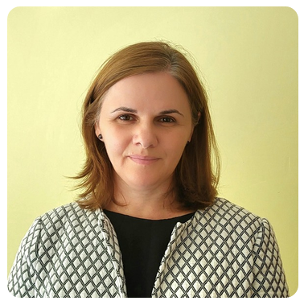

Individual sessions for adults
For adults experiencing anxiety, panic, depression, stress, low self-esteem, grief, insomnia or significant life changes.
Learn more →Professional counselling, psychotherapy and emotional support with Amalia Ancuta, MBACP. Sessions are available in Preston or online, in English and Romanian.
For adults experiencing anxiety, panic, depression, stress, low self-esteem, grief, insomnia or significant life changes.
Learn more →Compassionate emotional support around identity, overwhelm, adjustment, relationships and the realities of motherhood.
Learn more →Specialist support through pregnancy, birth trauma, emotional changes and postnatal difficulties.
Learn more →
I am Amalia, a bilingual psychotherapist, registered with BACP and BPS.
I offer 1-to-1 and group sessions in a quiet, rural area in Lea, Preston.
My work combines a person-centred and compassionate approach with creative techniques and experiential group work.
I am committed to creating a calm, welcoming and inclusive space where you can be exactly who you are.
Whether you are looking for short-term support to get through a specific challenge or long-term work to understand yourself more deeply, I would be honoured to support you on that journey.
More about my approachYou do not need to know exactly what to say. We begin with a conversation and take it one step at a time.
A free 15-minute telephone conversation where you can ask questions and decide whether you would like to continue.
We explore what has brought you to therapy, what you hope will change and whether we feel comfortable working together.
Sessions are usually weekly and last 60 minutes. Therapy may be short-term or longer-term depending on your needs.
Send a confidential enquiry or arrange a free 15-minute introductory call with Amalia.